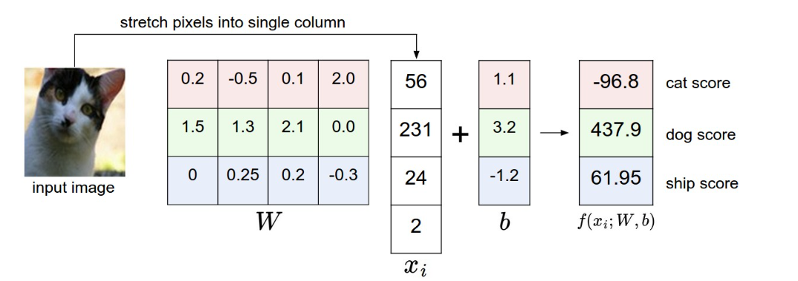
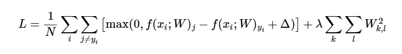
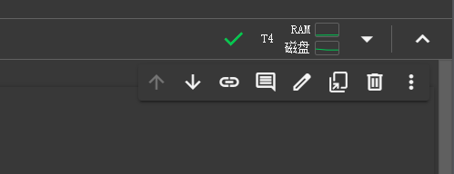
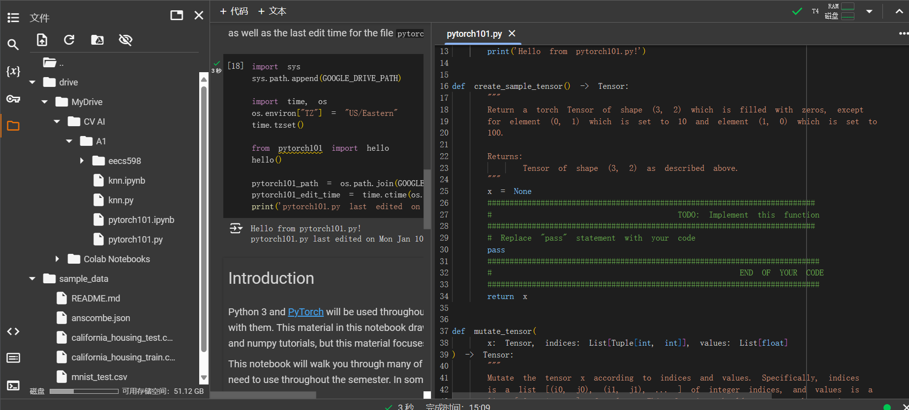

UMich EECS 498-007: Deep Learning for Computer Vision
Lec01 history of computer vision
所谓计算机视觉，就是指能让计算机理解图像信息的技术，在早期人们尝试过各种各样的方法，到现阶段deep learning 深度学习，成为了解决该问题的主流。
Lec02 Image classification
image classification是计算机视觉中最基础的目标之一，就是给出一系列图片和标签，把图片和标签对应起来，比如猫对猫，狗对狗。但是一个事物其拍摄角度，光影效果，物体的不同状态都会导致其产生的像素数据天差地别。
如果使用传统算法，我们会发现很难覆盖一个物体的所有情况，并且很难找到一个算法适用于所有的物体，因此我们会倾向于采用data-driven的做法，采用数据驱动。
在本次讲座中，描述了一种非常trivial的image classification的做法，也即Nearest Neighbor Classifier，将训练集的所有图形数据存下来，当新的数据传入的时候，对所有的存储的数据进行比较，得出最相近的那个图形数据以及其对应的标签，完成该次图像分类工作。
对于该做法有以下问题
- 存储空间消耗巨大
- 训练简单，使用困难，与我们的目标相悖
- 关于所谓的“相近”的做法的选择问题
为了优化Nearest Neighbor Classifier，我们还提出了k-Nearest Neighbor (kNN) classifier，也就是找到k个最相近图片，根据这些图片对应的标签
Lec03 Linear classification
这部分里面我们需要构建两个式子score function和loss function
- score function，将图像映射到一个单列矩阵，单列矩阵存储这该图像对于所有的标签的得分
- loss function，描述预测出来的标签和实际标签的一致性
score function
我们构建一个这样的式子
其中\(x_i\)是我们将图像信息以某种方式展开为单列的矩阵的结果，W和b是我们需要训练获得的有效参数，W和b也是一个矩阵，具体可以参照下图

最终获得的结果是一个单列矩阵，其描述了该图像对于所有标签的得分，当然上图是一个较为随意的参数设置。
loss function
其描述了预测结果和实际结果的差距，我们有多种方式来描述这种差别
multiclass support vector machine loss
这类损失函数被称为SVM，我们设一个图像为\(x_i\)，其正确标签为\(y_i\)，\(s_j\)表示该算法下，第i个图像对于第j个标签的得分，我们的SVM可以写为
我们仔细理解一下该式子 \(s_j-s_{y_i}\) 表示的正确标签的得分和某个错误标签得分的差值，我们自然希望这个差值越大越好，然后我们使用\(\Delta\)和与0进行max，确保一点，比如\(\Delta = 10\), 那么某个错误标签和正确标签之间得分相差10， 我们就把损失设定为0，若不到10，则表现出损失。
这样做可以保证一点，如果一个模型对于一个错误标签得分非常低，和正确标签相差甚远，但是其他标签和正确标签得分都差不多，这样的模型loss function也不会很低。
仅仅能够分辨出某个错误标签并不会太有用（
regularization
上述做法中还存在存在一些问题就是，\(\Delta\)是常数，理论上只要把M扩大N倍，就很容易就能获得超过\(\Delta\)的值
我们可以扩展loss fucntion，通过增加上regularization penalty \(R(W)\)，其正则化的方式也有很多，如下是L2 norm
SVM function转换成

practical considerations
Lec04 regularization and optimization
前一章中讲述了score function和loss function两个图像分类任务中的重要组件，而这一章我们要介绍optimization，也即我们如何找到参数\(W\)
当然我们了解了这三个组件是如何运作的时候，我们将不再局限于线性映射，而进入更复杂的score function，但是相互作用的关系是相对不变的。
optimization
pure random
一个最直接的想法就是随机生成一堆的W，找到一个loss function最小的，但是这几乎是完全不可行的，获取完全随机的最佳函数的结果所需的时间消耗是难以想象的。
random local search
一个更优的办法是，以一个随机的W为基准，向各个方向去尝试，让其加上随机的\(\delta W\), 如果其更优了，就更新当前的W
1 2 3 4 5 6 7 8 9 10 | |
following the gradient
依赖随机的优化总是不让人那么开心，事实上我们可以采用数学的方法来判断优化的方向。优化向量应当在数学上保证为最陡下降的方向，其与损失函数的梯度有关。
梯度即一个向量对每个维求偏导形成的向量
计算梯度有两种方式
- 数值计算，设计一个跨度，例如\(h=10^{-5}\) 直接计算 \([f(x+h)-f(x-h)]/2h\)
- 微积分计算 快速精确，但是容易出错
通过设计步长，我们就能实现持续有效的循环优化。
Assignment1 学习使用PyTorch和Colab
本课程的实验指导以ipynb的形式发送，我们需要在Google Colab上打开以获得完整的功能。

配置实验指导需要以下几步
- 运行set-up代码
- 将实验代码发送到Google Drive
- 并且将实验指导连上Google Drive并且指定路径
Colab同时为我们集成了，实验指导，虚拟环境和编辑代码的功能

pytorch 101
pytorch是一个免费开源的机器学习框架，其为我们提供了一系列工具
- 可使用GPU加速的tensor对象
- 自动计算导数的autograd engine
- 清晰的模块化的部署模型的API
进一步学习可以选择 oficial tutorials 或者 reading the documentation.
有关tensor一些概念
- rank of tensor 就是矩阵的dimension
- shape of tensor 是一个元组，给出每个dimension的size大小
如果我们直接使用下标访问tensor的元素，会获得一个pytorch标量，可以使用.item()方法转换成Python标量
构造
我们可以直接将python中的列表转换成tensor
1 | |
但是上述做法有些低效，pytorch提供了一系列的方法帮助我们构造tensor，包括全为0的，单位的，全为1的，随机的
比较常用的有torch.full()
1 | |
数据类型
我们可以在构造tensor的时候显示说明其数据类型
1 | |
当然还有一些更灵活的办法
1 2 3 4 | |
tensor的索引和切片
Pytorch中tensor的切片遵循以下规则
1 2 3 | |
切片返回的是引用，如果我们需要拷贝语义，则可以使用clone
1 | |
同时切片也可以做赋值，对于张量进行修改，其中Pytorch给我们提供很多的灵活做法，比如用单个元素表示用该元素填充切片的所有部分
1 2 3 4 | |
CPU or GPU
默认创建的tensor是CPU运行的，我们可以通过to方法或者cuda方法将其转换成GPU tensor
tips：如果我们需要比较CPU和GPU的时间的话，需要采用torch.cuda.synchronize来同步两者的时间